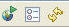

You can use the toolbar to run web applications
in the EGL Rich UI editor.
To run an EGL Rich UI application in the EGL Rich UI editor, click
the Preview tab. Here is the toolbar:

The tools at the Preview tab provide the following functions as
indicated by the hover help that is displayed when you move the mouse
over a given tool:
- At the left is the Launch external browser tool.
Click it to place the output of the Rich UI application in an external
browser as well as in the Preview view. You can select which external
browser is invoked by setting a Eclipse preference:
- Click .
- At the Preferences dialog, expand General and
click Web Browser.
- The check boxes Use Internal Web Browser and Use
External Web Browser have no effect on Rich UI. However,
you can select your external browser by selecting from the list of
browsers shown at that dialog and then clicking OK.
- The middle tool is the Configure preferences tool.
Click it to access the preferences that are described in Setting preferences for EGL Rich UI appearance.
- At the right is the Refresh Web page tool.
Click it to rerun a generated web page from the start.